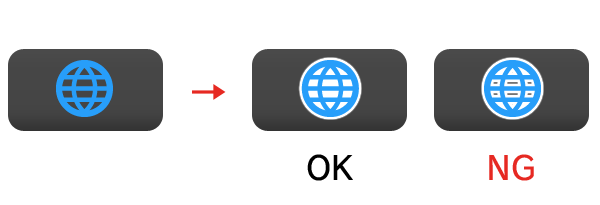
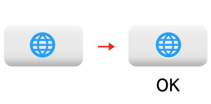

This document describes graphics data for the Internet Browser icon used on the CTR HOME Menu.
The information presented here is primarily for designers.
Figure 1-1. Internet Browser Icon
| Internet Browser |
|---|
Use this icon for the following purpose.
* As a button for jumping to an Internet Browser from within an application.
The Internet Browser icon data are provided in Illustrator (.ai) format. Convert the data to image file formats such as TGA and BMP as needed for your use.
The data is stored in $CTR_SDK/resources/icon/BrowserIcon.
The images cannot be modified. Do not add elements or alter the design.
Also be careful not to alter the aspect ratio when positioning the icons.
The basic color is blue (R,G,B =40, 165, 230). You can make fine adjustments to get softer coloration.
In addition to blue, you can also use white, black, and gray. Do not use any other colors.
There is no problem with adding a mask to the icon background for the purpose of increasing icon visibility.
There is no specification for the mask size, but be sure to fill the inside of the mask.

There is no problem with using embossing for the purpose of increasing icon visibility.

However, contact Nintendo if this makes the image different significantly.
CONFIDENTIAL